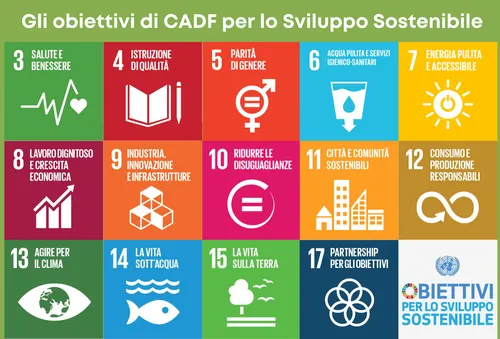
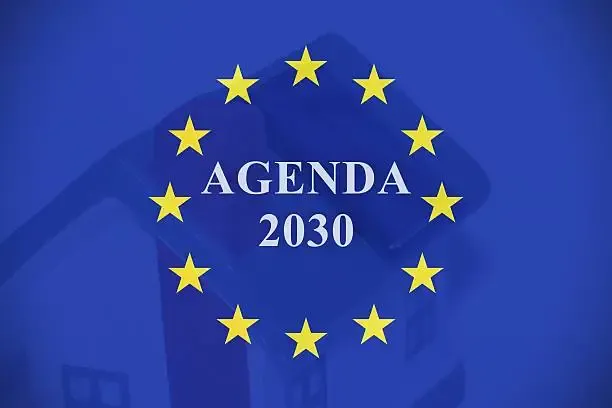

17 Obiettivi di Sviluppo Sostenibile firmati da 193 paesi ONU nel 2015. Un piano d'azione globale per persone, pianeta e prosperità, da raggiungere entro il 2030.


💡 Clicca su ogni obiettivo per scoprire i dettagli. I 17 SDG sono interconnessi: la pace (Goal 16) è la condizione per tutti gli altri.
È il pilastro dell'intera Agenda 2030. Senza pace non c'è scuola (Goal 4), non c'è salute (Goal 3), non c'è sviluppo economico (Goal 8). Come dice l'ONU: "Non c'è sviluppo sostenibile senza pace, né pace senza sviluppo sostenibile."
Ogni 12 minuti una persona muore in un conflitto. +40% vittime civili rispetto all'anno precedente.
1,6 miliardi di bambini (2 su 3) subiscono violenza in casa. 1 ragazza su 4 vittima di abusi.
Accesso alla giustizia per tutti. In molte regioni del mondo i tribunali non funzionano o sono corrotti.
Tangenti e corruzione drenano ogni anno l'equivalente del 5% del PIL mondiale.
Governi trasparenti, servizi pubblici funzionanti. Anagrafe, catasto, documenti: diritti di base negati a 1 mld di persone.
Ogni 14 ore un giornalista viene ucciso. 502 giornalisti assassinati nel 2024.
Cosa significa l'Agenda 2030 nella regione più instabile del mondo?
Il Medio Oriente è il banco di prova dell'Agenda 2030. Qui si concentrano conflitti decennali, disuguaglianze estreme, crisi idriche e migrazioni forzate. Il Goal 16 — pace e giustizia — è la chiave: senza pace, tutti gli altri obiettivi sono impossibili. Vediamo alcune chiavi di lettura.
Siria (dal 2011, 500.000+ morti, 12 milioni di sfollati), Yemen (dal 2014, "peggiore crisi umanitaria del mondo", 24 milioni di persone hanno bisogno di aiuti), Gaza e Israele-Palestina (escalation 2023-2025, decine di migliaia di vittime civili, infrastrutture distrutte). In tutti questi conflitti il diritto internazionale umanitario (Convenzioni di Ginevra) è messo alla prova. L'ONU denuncia: senza proteggere i civili, il Goal 16 non potrà mai essere raggiunto.
Il Medio Oriente è la regione con il più alto stress idrico del pianeta. I bacini del Tigri e dell'Eufrate sono contesi tra Turchia, Siria e Iraq. Le dighe turche (progetto GAP) riducono la portata d'acqua a valle, minacciando agricoltura e sopravvivenza. In Yemen l'acqua è scarsissima: Sana'a potrebbe essere la prima capitale al mondo a restare senz'acqua. Il Goal 6 (acqua pulita) qui è una questione di sopravvivenza e stabilità geopolitica.
Nella stessa regione convivono due realtà opposte. Emirati Arabi Uniti e Qatar: tra i PIL pro capite più alti del mondo, investono in energie rinnovabili (Masdar City, la prima città a zero emissioni), organizzano Expo e Mondiali. Yemen e Siria: tra i paesi più poveri, distrutti dalla guerra, con generazioni che crescono senza scuola né cure. Questo divario rappresenta la sfida del Goal 10: ridurre le disuguaglianze dentro e tra le nazioni.
Il Canale di Suez è una delle vie d'acqua più strategiche del mondo: collega il Mediterraneo al Mar Rosso, accorciando la rotta Europa-Asia di 7.000 km. Il 12% del commercio mondiale passa da qui. Nel 2021 la nave Ever Given lo bloccò per 6 giorni, causando danni per 9,6 miliardi di dollari al giorno. Questo episodio dimostra quanto sia vulnerabile l'economia globale a crisi localizzate. Collegamento diretto con Navigazione e con il Goal 9 (infrastrutture resilienti).
Suez è il punto di passaggio obbligato per le navi tra Europa e Asia. Ogni ufficiale di coperta deve conoscerne le procedure di transito, i convoy, le regole di pilotaggio. È un esempio perfetto di come navigazione, economia e geopolitica siano indissolubilmente legate.
Ungaretti: "Soldati" ("Si sta come d'autunno sugli alberi le foglie"), "Veglia", "San Martino del Carso" — la guerra come esperienza umana universale. Il Neorealismo e la ricostruzione post-bellica. Calvino e l'impegno civile.
UN vocabulary: "to call for a ceasefire", "to condemn human rights violations", "peacekeeping mission", "humanitarian corridor". "The Security Council unanimously adopted Resolution 2720" — linguaggio formale delle risoluzioni ONU.
Canale di Suez — crisi Ever Given 2021, 9,6 mld$/giorno di danni. Pirateria nel Golfo di Aden. Diritto marittimo internazionale (UNCLOS, SOLAS). La nave come soggetto giuridico in acque internazionali.
Conflitto israelo-palestinese (1948→oggi). Accordi di Oslo 1993. Primavere arabe 2011. Accordi di Abramo 2020. Il Medio Oriente come laboratorio della politica internazionale contemporanea.
"L'Agenda 2030 non e' un sogno utopico: e' una bussola. Il Medio Oriente ci mostra quanto sia difficile seguire quella rotta. Ma proprio perche' e' difficile, e' necessario. Come in navigazione: la stella polare serve quando il mare e' in tempesta, non quando e' calmo."